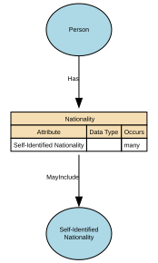

Nationality
Describes how an individual identifies with one or more nations, countries, or national groups.
In the Person domain, nationality is treated as a matter of personal identity and self‑expression, rather than legal status. Formal legal nationality or citizenship is modelled separately under Citizenship.
Implements Concepts from Person Domain, Concept Model
| Concept | Description |
|---|---|
| Nationality | A person’s formal affiliation to a nation or cultural identity, typically associated with the country or nation with which they identify or are recognised as belonging. In a conceptual model, Nationality represents a descriptive, identity‑based attribute of a Natural Person that may be based on heritage, birth, culture, or personal identification. |

Attributes
| Attribute | Description | Data type | Occurs |
|---|---|---|---|
| Self-Identified Nationality | Represents how an individual self-identifies their nationality or affiliation to one or more countries or recognised groups. Values should be drawn from a controlled vocabulary (e.g. ISO country codes or recognised classifications), rather than free text input. A specific value set is not mandated at this stage and will be defined through future governance. This attribute captures self-identified identity and is distinct from formal legal nationality or citizenship, which is modelled separately. | structure | many |